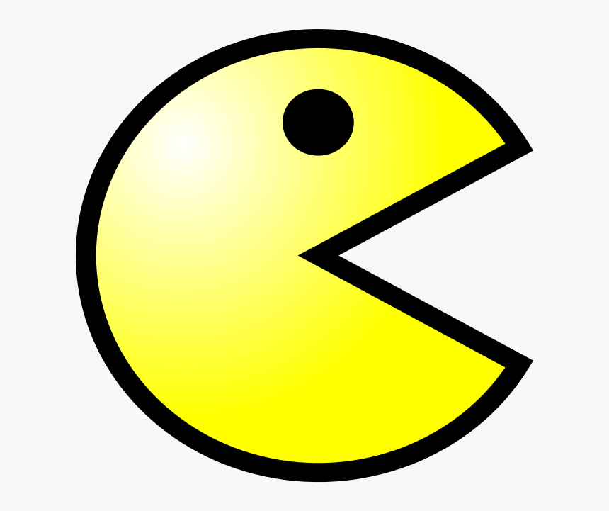
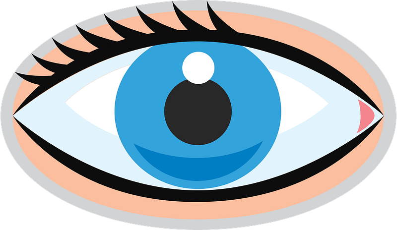
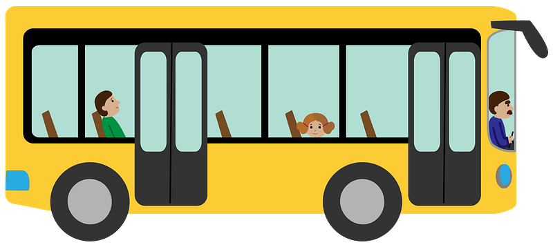

Top Three Projects

PacMen
This is a factory designed to make multiple pacmen. When pressing "make one" button, you must complete code to position the new pacmen image and add it to the game div. This new pacmen will then be added to the array of pacmen, keeping track of the position and velocity of each one.
View Project Repo

Eyes
This was an exercise designed to see if the eyes could follow the position of the mouse. Both eyes have to follow the mouse simultaneously.
View Project Repo

Bus Tracking
This project focuses on identifying how long it will take for a bus to go around a specific circuit, and how long it should take to go from one stop to another.
View Project Repo